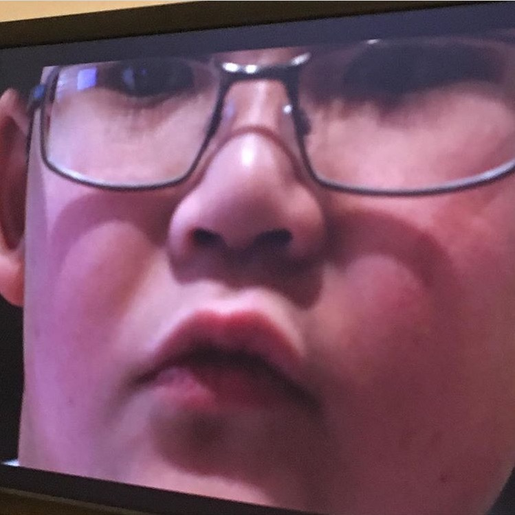

Leaving TechYummy?

TechYummy has always been a fun adventure for me, we used to meet monthly with friends and create content, I had always looked forward to that vibe. But now, I'm not feeling it. We had been poting less and less, not really making any videos. So, I said that if we don't make any progress by December, I will resign form TechYummy. Thanks for your guy's support!